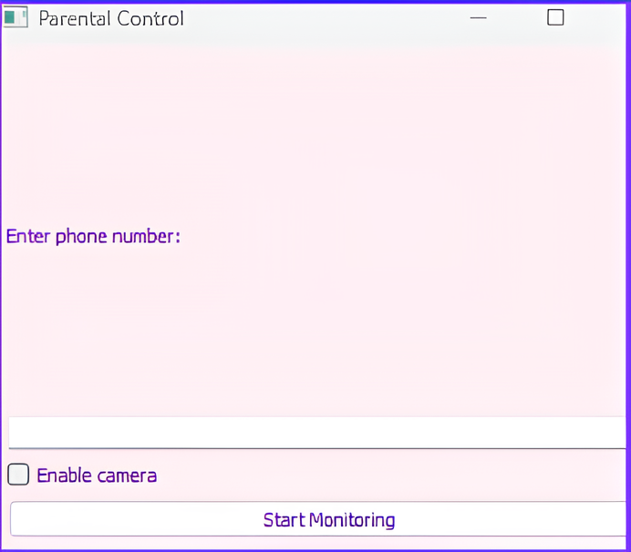
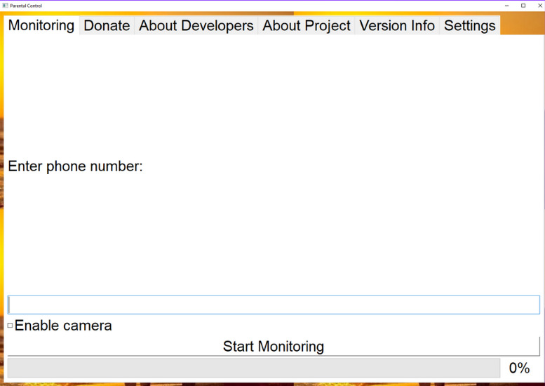
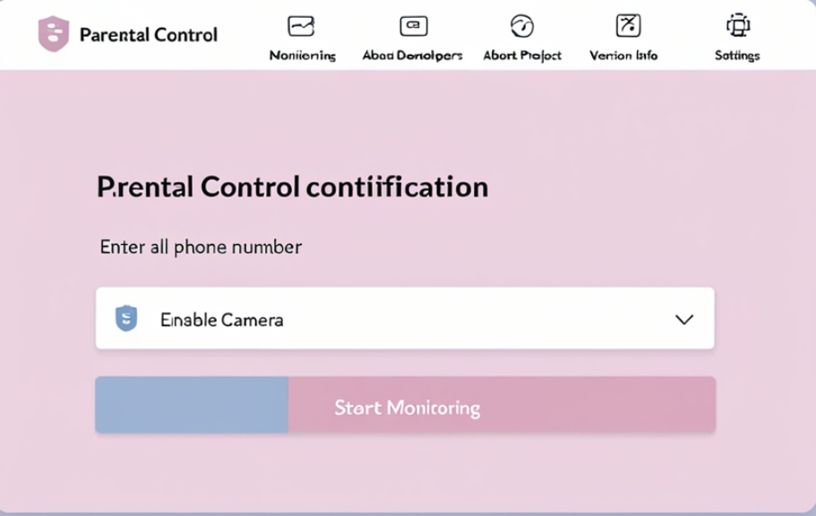

Наша цель
Основной целью проекта является снижение случаев проявления деструктивного поведения и конфликтов в учебных заведениях. Мы предлагаем интеграцию нашего ПО для мониторинга агрессивных эмоций и нецензурной речи, обеспечивая защиту и безопасную среду для учащихся.
О технологии e-sense
e-sense — это передовая система для мониторинга поведения учащихся, интегрированная в школьные системы наблюдения. Наша технология анализирует эмоции и речь, выявляя агрессию и нецензурные выражения, помогая предотвращать конфликты и поддерживать благоприятную учебную атмосферу.


Анализ эмоций
Система e-sense на базе ИИ распознает агрессивные эмоциональные состояния и нецензурную лексику в реальном времени, позволяя быстро реагировать на возможные угрозы и предотвращать конфликтные ситуации среди учащихся.
Легкая настройка и использование
Наше приложение разработано с учетом удобства пользователя, что позволяет легко настроить параметры мониторинга и получать своевременные уведомления без вмешательства в вашу повседневную рутину.

О технологии e-sense
e-sense представляет передовые инновации в области родительского контроля. Объединяя сложные алгоритмы искусственного интеллекта, он анализирует как эмоции, так и речь, помогая родителям оставаться в курсе психологического состояния их ребенка, сохраняя при этом здоровую онлайн-среду.

Анализ эмоций
Наша система на базе ИИ может отслеживать мимику через камеру в реальном времени. Она распознает эмоциональные состояния, такие как гнев, стресс или разочарование, предупреждая родителей, чтобы они могли быстро оказать поддержку.

Легкая настройка и использование
Наше приложение разработано с учетом удобства пользователя, что позволяет легко настроить параметры мониторинга и получать своевременные уведомления без вмешательства в вашу повседневную рутину.

Версии приложения
Версия 1.0.0
Версия 2.0.0
Версия 3.0.0
Наши ценности
Мы заботимся о безопасности данных вашей семьи, используя современные стандарты защиты и конфиденциальности. Все данные обрабатываются с соблюдением законов и высоких стандартов безопасности, обеспечивая надежную защиту в цифровом пространстве.
Эмоциональная поддержка важна для каждого ребенка. Наша технология не только выявляет потенциальные проблемы, но и помогает родителям заботиться о детях, обеспечивая своевременную реакцию на трудности. С e-sense вы получите как цифровую защиту, так и возможность оказать эмоциональную помощь, укрепляя доверие в семье.
Мы постоянно совершенствуем наши алгоритмы ИИ, чтобы обеспечить максимальную точность в обнаружении потенциальных проблем. Наша цель — предоставить современные и эффективные инструменты, которые помогут родителям защищать своих детей как сегодня, так и в будущем.